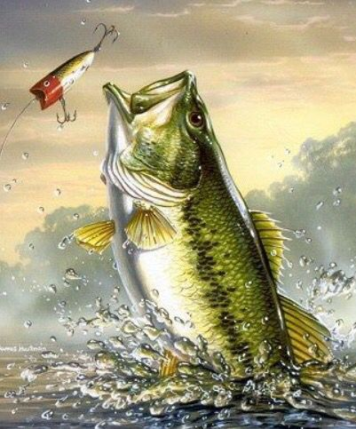
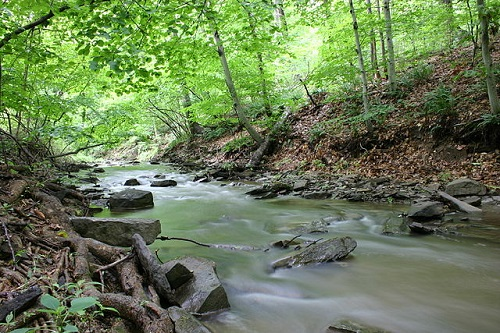
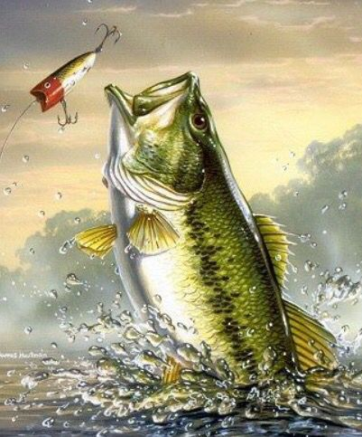
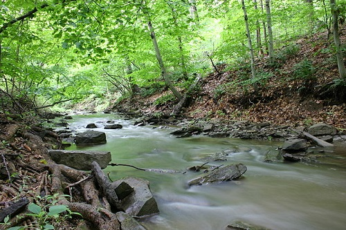
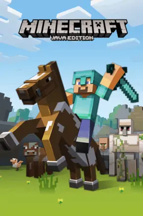
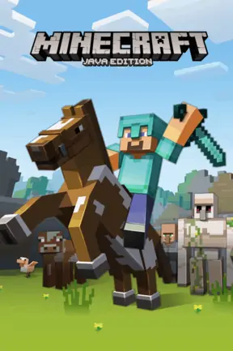

About me
Hi, my name is Dylan. Welcome to my website.I am a student at intellibricks. I'm taught with SCRATCH coding and SUBLIME.
I am 11 and have 2 dogs at my dad's house named tristan and ellie. And another 2 dogs at my mom's house named coopper and luoie. My favorite show is "demon slayer"/a anime.
My favorite color is black and favoirte video game is probably the "the witcher wild hunt" or "minecraft".
My hobbies are fishing,swiming, and was biking before my family moved to folsom with long hills. Finally, my favorite
thing to do at my dad's house is to play in the creek in the winter.
 My profile picture.
My profile picture.
Why do I like the game H.O.R.S.E?
I like the game horse since It's active and keeps your blood flowing. Plus it gives you good exersize.
Even though you don't move as much as you would in basketball it's still really fun.
One last thing is that my dad's likes when I go outside and when we play together in H.O.R.S.E.
 



 
